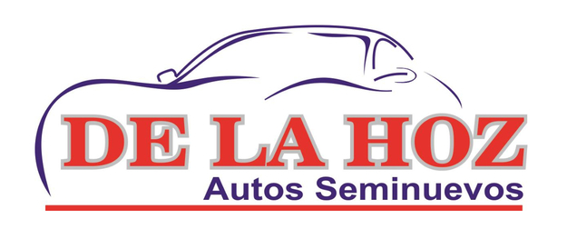

|
Martínez de la torre, Ver. A [Fecha]. Bueno por: $[Costo] |
|
Recibí del Sr. Miguel Nicolás De La Hoz Couturier la cantidad de $[Costo] (Moneda Nacional) derivado del tipo de mantenimiento [Tipo_Mantenimiento] el cual se describe a continuación, [Descripción]. |
| Nombre y Firma |